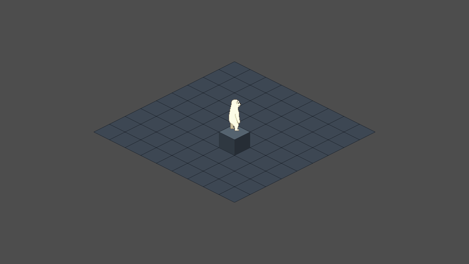
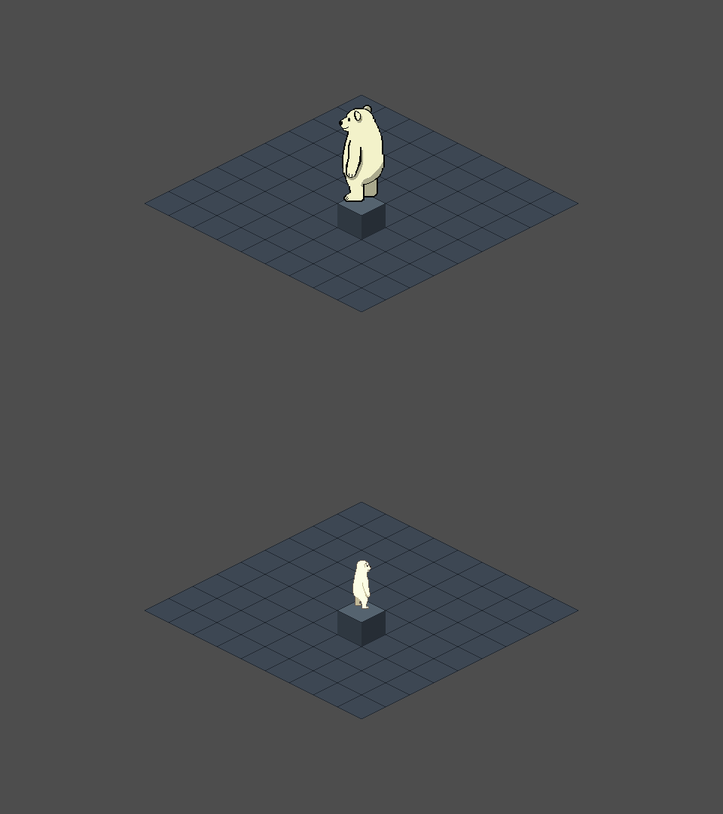
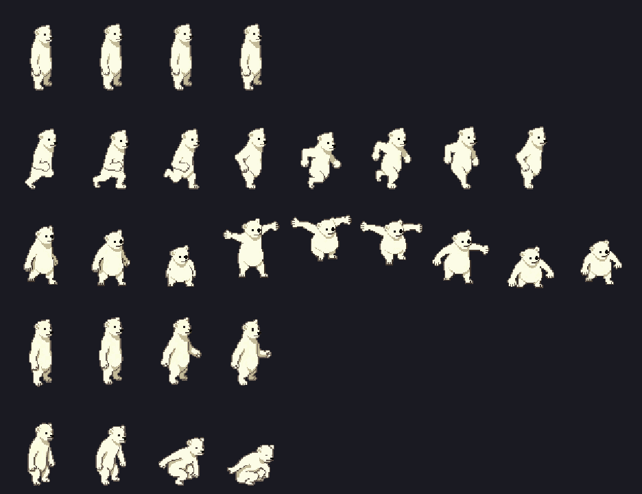
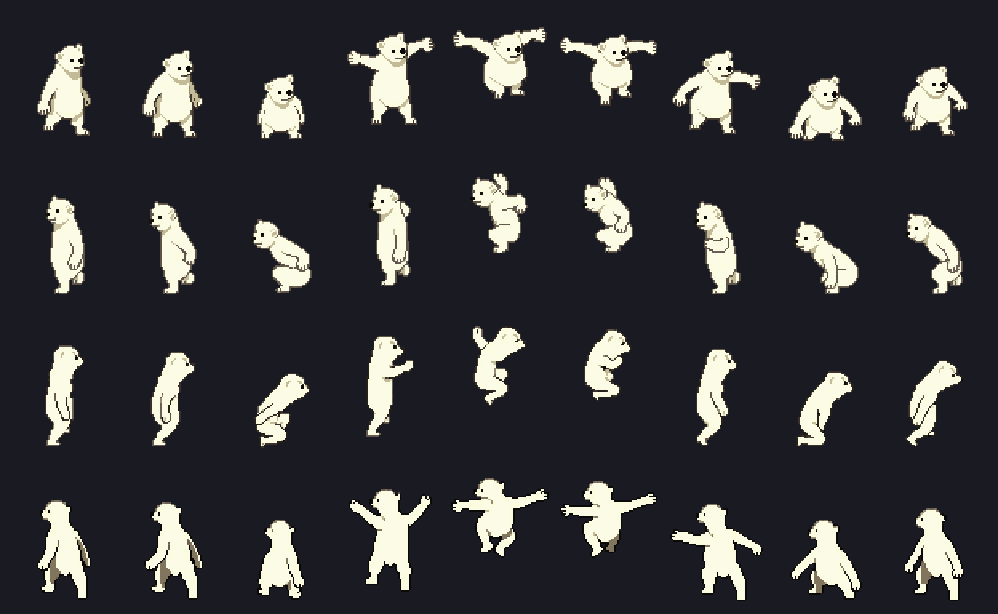
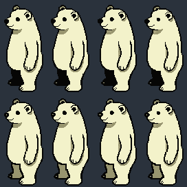
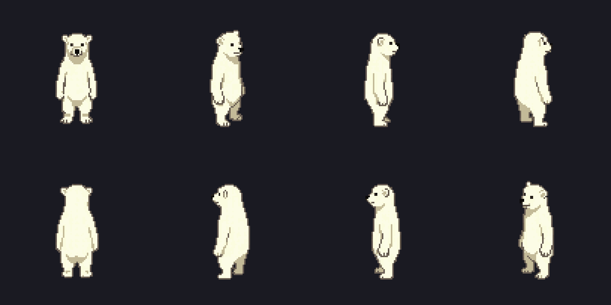
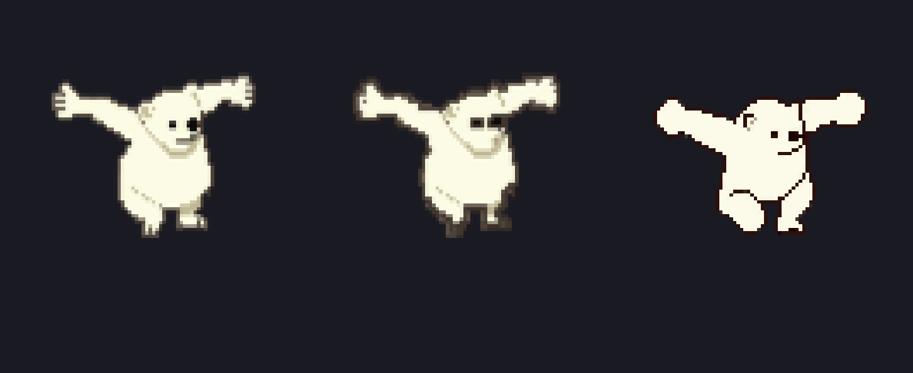

Polar Adventures · isometric port
The bear rendered in the projection it will actually ship in, with every animation state it needs. Built to answer two questions no sprite sheet can: does the character read standing on a diamond, and does the footage hold together once it is registered.
The real scene, captured headless from Godot at the game's own 960×540, one art pixel to one game pixel. The diamond grid is a placeholder drawn from the shipping projection code; there is no tile art yet.


Framing moved with the character, and that is a second decision. The viewport is still 960×540, so the bear now fills 12.2% of screen height where it filled 23.9%, and the jump covers 41% of it where it covered 83%. Halving the viewport to 480×270 would restore the old framing exactly — still an integer 4× at 1080p, still one art pixel to one game pixel — and it is a two-setting change.
This is what the third bug of the session looked like. At 64×32 the bear is 4.03 diamond-heights tall with a 14-diamond jump. The Phaser build measured 1.88 and 6.6 and was found good. About twice too large — the diamonds read as small floor tiles under a big bear, and every jump needs fourteen diamond-rows of headroom.
| diamond | hero heights | jump | PixelLab tools lost |
|---|---|---|---|
| 64×32 | 4.03 | 14.0 | none |
| 96×48 | 2.69 | 9.3 | isometric tile |
| 128×64 | 2.02 | 7.0 | three of four |
| Phaser build | 1.88 | 6.6 | — |
| chosen: 64 px bear | 2.02 | 7.0 | none |
64 wide is the largest size at which all four PixelLab isometric tools interoperate, so enlarging tiles to fix the ratio costs props, roads and single tiles. Hence a smaller bear.
Each frame is translated so its lowest opaque row lands on a common ground row and its body centres on a common column — the same recipe the Phaser build arrived at for its generated poses. Without it the bear bobs and shuffles: the model places every frame independently, and on the previous bear the feet moved 4 px vertically across a single idle.
Eight frames per facing, all landing on row 69. Every consecutive pair differs by 7–15% of the frame, roughly a quarter to a third of the bear's own pixels — so this is a stride rather than a set of near-identical stances, which is the failure an animation strip actually has.
What to look at. Whether the four facings are tellable apart at 1× — that is the size the game draws them, and the one that matters. Whether the stride reads as a run rather than a wobble. And whether the feet stay put with the blue line.
An airborne clip is registered with one translation for the whole clip, taken from its lowest frame — not one per frame. Planting every frame on the ground row, which is right for a run or a landing, would clamp the bear back onto the floor on exactly the frames where it is highest and delete the leap. This project already paid for that lesson once, on the side-view poses.
The frame is also sized around the arc rather than the tallest pose: it grew from 72 to 84 pixels the moment the jump was added, because the bear travels up through the canvas and the frame has to hold where its feet reach.
Five clips, four facings, 124 frames. The frame height is fixed for all of them, so the jump's arc and the landing's crouch are measured against the same ground line as a standing pose.


South-west came back with its back leg filled with the outline's near-black instead of a fur tone — so limb and outline were one flat colour and it read as a hole punched through the bear. Measured against south-east: 623 more near-black pixels and 554 fewer mid-olive ones. Roughly equal and opposite, which is what makes it a fill error rather than extra shading.

The fix runs in the build, not on this one image. It recolours the interior of any near-black region thicker than a 5×5 block and leaves a one-pixel rim — so the limb comes back as an outlined fur-coloured leg, which is what the other directions already looked like. The guard is thickness, not a list of coordinates: a one-pixel outline cannot survive a 5×5 solid test and neither can an eye or a nose, so the outline and the face are untouched by construction.
repaired: south-west 827 px → #98956F · south-east 11 px → #98956F · north-west 0 px (its darkest real tone is #AAA98D, so there was nothing to fix)
Direction naming is per character and cannot be inferred: on the previous bear, east was a rearview. These were read off the images rather than trusted.

The four diagonals — south-east, south-west, north-east, north-west — are the isometric set, because a 2:1 diamond puts the lattice directions on the screen diagonals. They are proper 3/4 views, so four facings are needed rather than eight, with no mirroring.
The arms came out as sticks — thick enough to read as limbs, but nothing like the body they hang from. Measured from the jump frames, where the arms are extended and clear of the torso, so the outer columns cross an arm and nothing else.
arm 3.0 px · leg 12.0 px · arm ÷ leg = 0.25 · and 2.2 px against 12.8 on the idle, also 0.25
A quarter. That is the "barrel with twigs bolted on" reading, quantified — and the
reason tools/measure_limbs.gd now exists rather than a note in a log. It
measures the thinnest vertical run in the outer fifth of the frame (the arm, cut across)
and the median horizontal run near the feet (the leg, measured where it is actually
separated: mid-leg the two runs merge into one 22px run and the "leg" comes out thicker
than the torso, which is the very failure scripts/review-limbs.mjs was
built to catch).

All three routes were tried, and each fails differently:
A pixel artist would redraw the arm, not dilate it. That is the honest summary of why the algorithmic route keeps needing another exception.
Verdict: none of the three shipped. All of the above was judged at 5.5×, where a six-pixel hand looks broken. Re-tested at 1× — the size the game draws, in the 960×540 viewport — the regenerated bear is clean but is a different animal, and the thickened one puts a black bar across the face where the eye and nose merge. The bear as generated is the one being kept, and the thickener is kept in the tree with its negative result written into its header, because the next person to have this idea should find that out there rather than here.